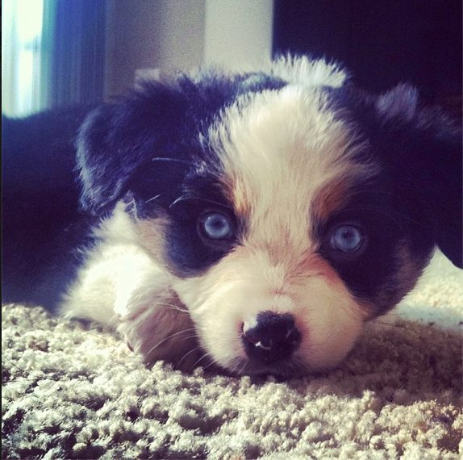
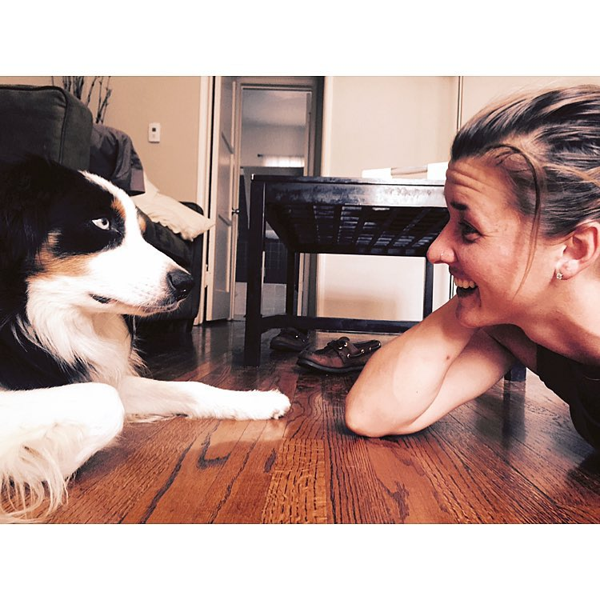
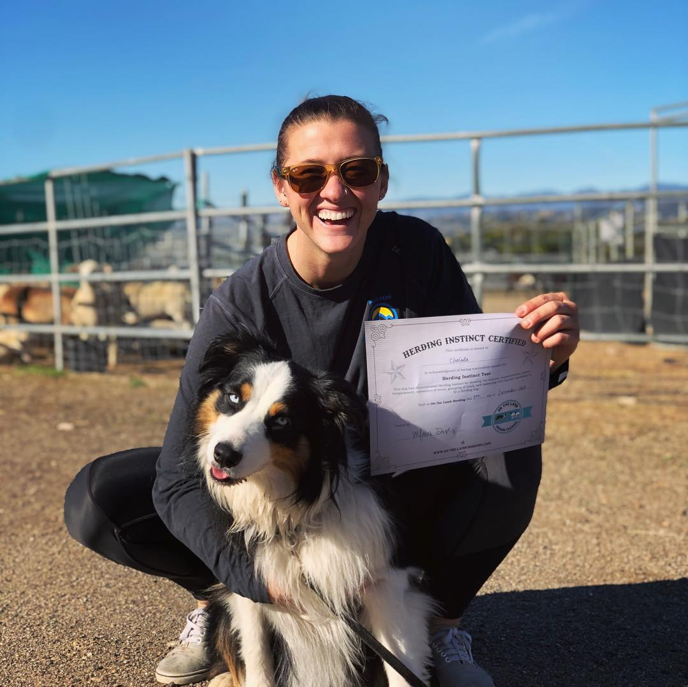
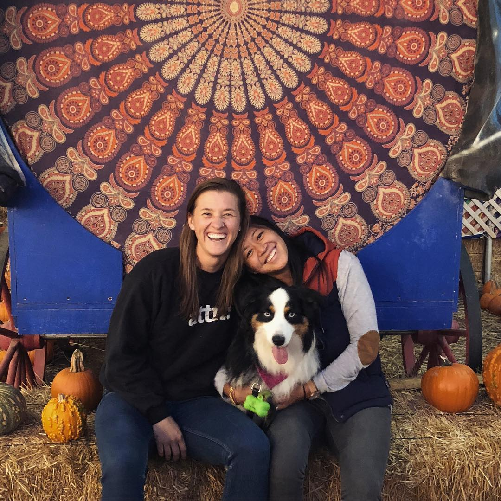

The name is Chu - or Cholula - or Cholupa - people make a lot of names for me and my awesomeness. I am 5 year old Aussie Shepherd living my best life in Los Angeles!
I met my Mom when I was just a little nugget. I was 8 weeks old - and I didn't really know what to make of my world.
I began to realize life is REALLY awesome. Mom showed me how cool frisbees are. And the beach. We love the beach.
A couple times she would bring home other moms... and they would hang and play for a little while. A month, a year, maybe a couple... but in they end, it still just always felt like 'Me and Mom' 
This new Mom... her name was Brenna, but her energy was different than all the other moms I had met. She had an energy like another dog. She played with me like a really nice (not so rough) dog. She always wanted to play ball, and she even loved me more than Kellin. It was AWESOME. It STILL is awesome. I am finally the center of attention like a deserve.
Needless to say, my life is pretty great these days and I am so grateful for both my Moms. I never thought Kellin would find someone who would love me more - but, I had my vote for that since she picked me up at 8 weeks!